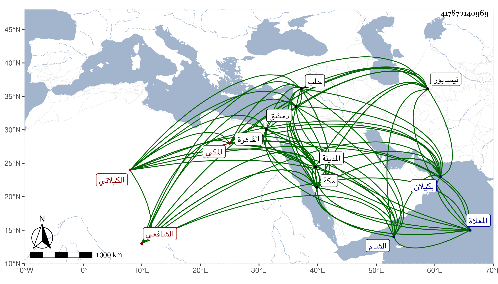

0902Sakhawi.DawLamic.ITO20230111-ara1.EIS1600.417870140969
Biography ID: 417870140969
541
حسين بن أحمد بن محمد بن أحمد البدر بن الخواجا الشهاب الكيلاني ثم المكي الشافعي الماضي أبوه ويعرف بابن قاوان . ولد في ليلة الاثنين من أواخر رجب سنة اثنتين وأربعين وثمانمائة بكيلان ونشأ بها في كنف والده فأقرأه الحاوي ووعده على إنهاء حفظه بألف دينار وأمر أخاه بدفعها له من تركته ففعل وقرأه حفظا ومباحثة على جماعة منهم العالم محمد بن خضر بن محمد النيسابوري بقراءته له على العز طاهر بن محمد بن علي الروانيري الأسفرايني نزيل نيسابور بقراءته له على الشمس السابوري بقراءته له على العلاء الطاووسي بروايته له عن مؤلفه ، وعن ابن خضر هذا أخذ في الصرف والنحو والحديث والتفسير أيضا ، وأخذ الكلام والعربية والمعاني والبيان عن الشيخ محمد المدعو حاجي الفرحي السجستاني الحنفي والفرائض والمنطق والمعاني عن الهمام الكرماني أحد أصحاب الخوافي والكلام عن المعين بن السيد صفي الدين الايجي بل أخذه عنه في تفسيره والنحو والمنطق وعلم الخلاف وأدب البحث عن مظفر الكازروني ، وممن أخذ عنه بمكة الكمال بن الهمام ولازمه في مختصر ابن الحاجب الأصلي وزوجه والده ابنة الكمال وكذا لازم إمام الكاملية في الأصول والفقه والحديث ومما قرأ عليه المنهاج الأصلي ومواضع من شرحه ، وسمع عليه أكثر المنهاج الفرعي وأبا الفضل المغربي في الأصول والمنطق والعروض والكلام وابن يونس في الأصول والجبر والمقابلة والحساب والعروض ، كل ذلك بمكة وارتحل إلى الشام في سنة إحدى وسبعين فأخذ بدمشق عن البدر بن قاضي شهبة في الفقه وعن الزين خطاب في الفقه وأصوله والقراءات والحديث وسمع على عبد الرحمن بن خليل القابوني وبحلب عن الشهاب المرعشي التفسير والتصوف والكثير من نظمه ، وإلى القاهرة في التي تليها فأخذ عن الكافياجي في المعاني والبيان بل قرأ عليه في الكشاف وغيره وإلى المدينة النبوية فقرأ بها على الشهاب الابشيطي شرحه لخطبة المنهاج ، وسمع فيها على أبي الفرج المراغي ، وبمكة على أخيه الشرف أبي الفتح بل قرأ على الزين عبد الرحيم الأميوطي البخاري وأخذ عن السيد إبراهيم بن أحمد بن عبد الكافي الطباطبي ، وتلقن الذكر من كل من الهمام الكرماني وإمام الكاملية الماضيين وعبد الكريم وإدريس الحضرميين في آخرين في هذه العلوم وغيرها وبرع في الفضائل وأقرأ الطلبة بل شرح الورقات لامام الحرمين ورسالة العضد في أصول الدين والقواعد الصغرى في النحو والتصريف وأربعي النووي وهو في مجلدين ولكنه أودع فيه تصوفا كثيرا وكتب حاشية على خطبة تفسير البيضاوي وجزءا في القزويني صاحب الحاوي وله نظم في الجملة ، قرض له بعضها الشهاب الابشيطي ووصفه بزين الملة والدين الملا الامام العلامة وقال إنه اطلع فيه على فوائد جمة كل منها رحلة فاق فيها من كان قبله ، قال وأجزت له إقراء تلك التصانيف النفيسة وكذا ما يجوز لي وعني روايته وقراءته والسيد السمهودي وقال إنه أبدع في تحقيقه لما أودع من تدقيقه مع التلخيص والايضاح وحسن السبك وجودة الافصاح قال فاقتطفت من غصنه معترفا بحسنه وقمت له إكراما وقعدت عن تقريضه احتراما ولله در القائل :
| وليس يزيد الشمس نورا وبهجة | إطالة ذي وصف وإكثار مادح |
إلى غيرهما ممن قرض ، وكذا قرضت له غير واحد منها امتثالا لسؤاله بل سمع مني بعض ترجمة النووي والقول البديع من تصانيفي واستجازني بهما وبغيرهما من مؤلفاتي وغيرها وأفردت للعضد ترجمة بسؤاله وكان كثير الطواف والعبادة والأوراد مع خشوع وأدب بحيث كنت أستأنس برؤيته ، محبا في الفضائل والفضلاء مكرما لهم حسب استطاعته . مات في ليلة السبت ثامن ذي القعدة سنة تسع وثمانين بمكة وصلى عليه بعد صلاة الصبح عند باب الكعبة تقدم الناس السيد المحيوي الحنبلي بتقديم ابن عمه ملك التجار وكأنه بوصية منه لحسن إعتقاده فيه ومصاهرة بينهما فإنه تزوج أختين للسيد واحدة بعد أخرى وماتتا تحته واحدة بمكة والأخرى بالمدينة ثم دفن بتربتهم من المعلاة رحمه الله وإيانا .
